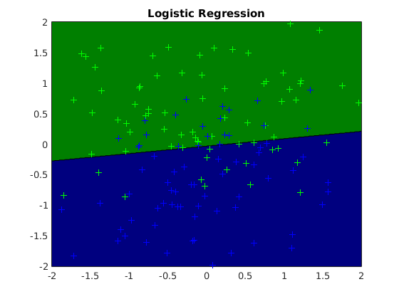
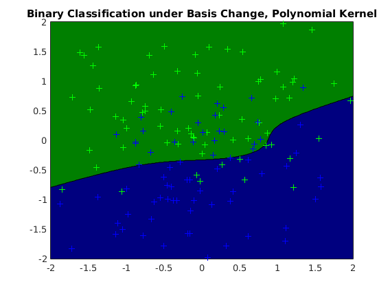
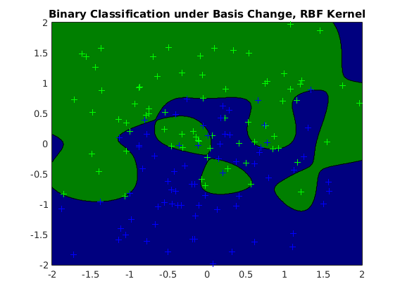
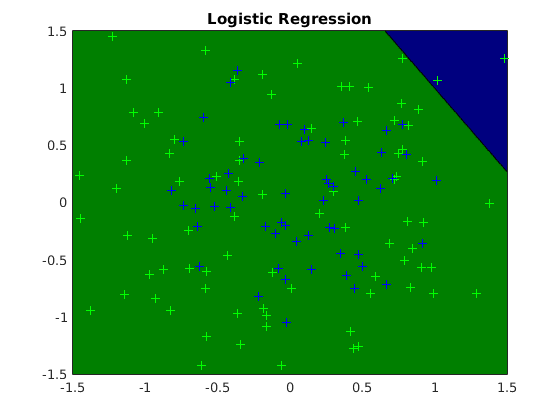
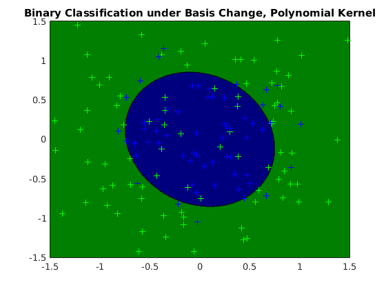
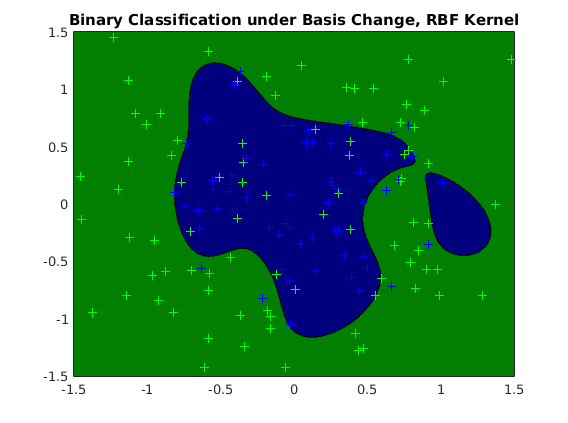
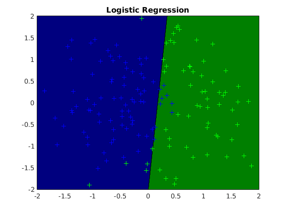
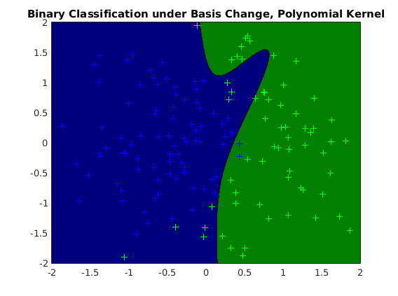

Contents
- Description
- usage of logistic regression (vert dataset)
- usage of logistic regression with polynomial basis (vert dataset)
- usage of logistic regression with RBF basis (vert dataset)
- usage of logistic regression (circular dataset)
- usage of logistic regression with polynomial basis (circular dataset)
- usage of logistic regression with RBF basis (circular dataset)
- usage of logistic regression (curved dataset)
- usage of logistic regression with polynomial basis (curved dataset)
- usage of logistic regression with RBF basis (curved dataset)
Description
Demonstration of logistic regression with different bases on three synthetic datasets with distinct patterns to the class labels
clear all close all generateData_vert
usage of logistic regression (vert dataset)
options_lg = []; model_lg = ml_binaryclass_logistic(Xtrain, ytrain, options_lg); yhat_lg = model_lg.predict(model_lg, Xtest); testError_lg = mean(abs(yhat_lg - ytest)); fprintf('Averaged absolute test error with %s is: %.3f\n', .... model_lg.name, testError_lg);
Averaged absolute test error with Logistic Regression is: 0.124
usage of logistic regression with polynomial basis (vert dataset)
options_bs1 = []; options_bs1.basisFunc = @ml_kernel_poly; options_bs1.basisOptions.bias = 0; options_bs1.basisOptions.order = 3; options_bs1.subModel = @ml_binaryclass_logistic; options_bs1.subOptions.addBias = 1; model_bs1 = ml_binaryclass_basis(Xtrain, ytrain, options_bs1); yhat_bs1 = model_bs1.predict(model_bs1, Xtest); testError_bs1 = mean(abs(yhat_bs1 - ytest)); fprintf('Averaged absolute test error with %s is: %.3f\n', ... model_bs1.name, testError_bs1);
Averaged absolute test error with Binary Classification under Basis Change, Polynomial Kernel is: 0.302
usage of logistic regression with RBF basis (vert dataset)
options_bs2 = []; options_bs2.basisFunc = @ml_kernel_rbf; options_bs2.basisOptions.sigma = 1; options_bs2.subModel = @ml_binaryclass_logistic; options_bs2.subOptions.addBias = 1; model_bs2 = ml_binaryclass_basis(Xtrain, ytrain, options_bs2); yhat_bs2 = model_bs2.predict(model_bs2, Xtest); testError_bs2 = mean(abs(yhat_bs2 - ytest)); fprintf('Averaged absolute test error with %s is: %.3f\n', ... model_bs2.name, testError_bs2);
Averaged absolute test error with Binary Classification under Basis Change, RBF Kernel is: 0.551
figure; plot2DClassifier(Xtrain, ytrain, model_lg); figure; plot2DClassifier(Xtrain, ytrain, model_bs1); figure; plot2DClassifier(Xtrain, ytrain, model_bs2); generateData_circular  
usage of logistic regression (circular dataset)
options_lg = []; model_lg = ml_binaryclass_logistic(Xtrain, ytrain, options_lg); yhat_lg = model_lg.predict(model_lg, Xtest); testError_lg = mean(abs(yhat_lg - ytest)); fprintf('Averaged absolute test error with %s is: %.3f\n', ... model_lg.name, testError_lg);
Averaged absolute test error with Logistic Regression is: 0.782
usage of logistic regression with polynomial basis (circular dataset)
options_bs1 = []; options_bs1.basisFunc = @ml_kernel_poly; options_bs1.basisOptions.bias = 0; options_bs1.basisOptions.order = 2; options_bs1.subModel = @ml_binaryclass_logistic; options_bs1.subOptions.addBias = 1; model_bs1 = ml_binaryclass_basis(Xtrain, ytrain, options_bs1); yhat_bs1 = model_bs1.predict(model_bs1, Xtest); testError_bs1 = mean(abs(yhat_bs1 - ytest)); fprintf('Averaged absolute test error with %s is: %.3f\n', ... model_bs1.name, testError_bs1);
Averaged absolute test error with Binary Classification under Basis Change, Polynomial Kernel is: 0.178
usage of logistic regression with RBF basis (circular dataset)
options_bs2 = []; options_bs2.basisFunc = @ml_kernel_rbf; options_bs2.basisOptions.sigma = 1; options_bs2.subModel = @ml_binaryclass_logistic; options_bs2.subOptions.addBias = 1; model_bs2 = ml_binaryclass_basis(Xtrain, ytrain, options_bs2); yhat_bs2 = model_bs2.predict(model_bs2, Xtest); testError_bs2 = mean(abs(yhat_bs2 - ytest)); fprintf('Averaged absolute test error with %s is: %.3f\n', ... model_bs2.name, testError_bs2);
Averaged absolute test error with Binary Classification under Basis Change, RBF Kernel is: 0.462
figure; plot2DClassifier(Xtrain, ytrain, model_lg); figure; plot2DClassifier(Xtrain, ytrain, model_bs1); figure; plot2DClassifier(Xtrain, ytrain, model_bs2); generateData_curved  
usage of logistic regression (curved dataset)
options_lg = []; model_lg = ml_binaryclass_logistic(Xtrain, ytrain, options_lg); yhat_lg = model_lg.predict(model_lg, Xtest); testError_lg = mean(abs(yhat_lg - ytest)); fprintf('Averaged absolute test error with %s is: %.3f\n', ... model_lg.name, testError_lg);
Averaged absolute test error with Logistic Regression is: 0.169
usage of logistic regression with polynomial basis (curved dataset)
options_bs1 = []; options_bs1.basisFunc = @ml_kernel_poly; options_bs1.basisOptions.bias = 0; options_bs1.basisOptions.order = 3; options_bs1.subModel = @ml_binaryclass_logistic; options_bs1.subOptions.addBias = 1; model_bs1 = ml_binaryclass_basis(Xtrain, ytrain, options_bs1); yhat_bs1 = model_bs1.predict(model_bs1, Xtest); testError_bs1 = mean(abs(yhat_bs1 - ytest)); fprintf('Averaged absolute test error with %s is: %.3f\n', ... model_bs1.name, testError_bs1);
Averaged absolute test error with Binary Classification under Basis Change, Polynomial Kernel is: 0.196
usage of logistic regression with RBF basis (curved dataset)
options_bs2 = []; options_bs2.basisFunc = @ml_kernel_rbf; options_bs2.basisOptions.sigma = 1; options_bs2.subModel = @ml_binaryclass_logistic; options_bs2.subOptions.addBias = 1; model_bs2 = ml_binaryclass_basis(Xtrain, ytrain, options_bs2); yhat_bs2 = model_bs2.predict(model_bs2, Xtest); testError_bs2 = mean(abs(yhat_bs2 - ytest)); fprintf('Averaged absolute test error with %s is: %.3f\n', ... model_bs2.name, testError_bs2);
Averaged absolute test error with Binary Classification under Basis Change, RBF Kernel is: 0.009
figure; plot2DClassifier(Xtrain, ytrain, model_lg); figure; plot2DClassifier(Xtrain, ytrain, model_bs1); figure; plot2DClassifier(Xtrain, ytrain, model_bs2); 